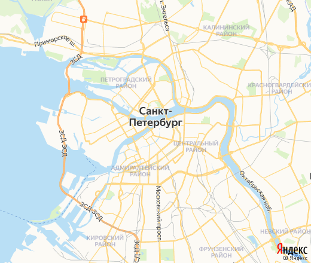
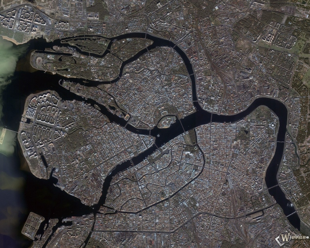

Санкт-Петербург – русский портовый город на побережье Балтийского моря, который в течение двух веков служил столицей Российской империи. Он был основан в 1703 году Петром I, которому воздвигнут знаменитый памятник "Медный всадник". Город по праву считается культурным центром страны. У туристов пользуются популярностью Мариинский театр, где проходят оперные и балетные спектакли, и Государственный Русский музей с коллекцией русского искусства, которая включает как православные иконы, так и работы художника-абстракциониста Василия Кандинского.
карта и вид со спутника
 